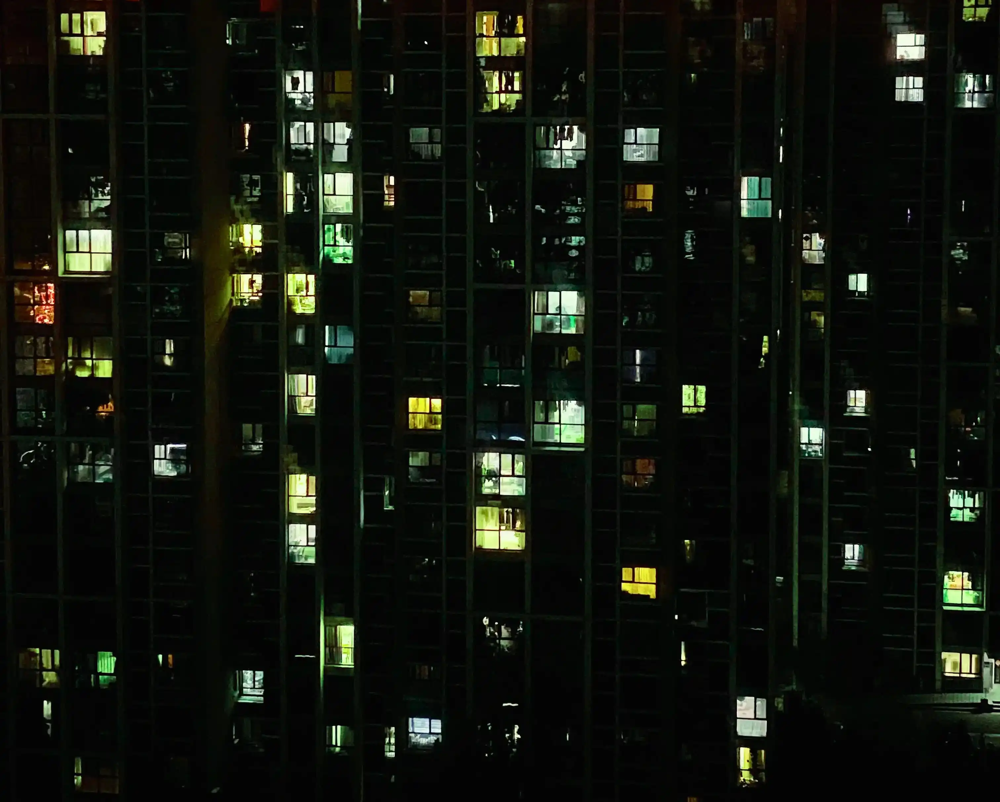

It has been a slow week. As the trees shed their bright yellow coats and I button up mine, I look down as my feet drag past the puddles of yesterday’s rain. Having officially phased out iced coffee, my writing this week is fuelled by flavoured lattes and warm red bean buns.
This is my first time seeing Beijing’s autumn. Nothing could have prepared me for its beauty – made even sweeter by its short-lived presence. The few early days of rain this week have cleared the clouds of pollution, preparing us for a sky so blue it brings back summer memories.
I headed to Tsinghua University’s main campus to admire the peak of autumn from its historical centre. We cycled toward it from one of its many gates, the rain drizzling upon us. The leaves snowing slowly to the ground attracted crowds of students, ready to take the photo that will top their WeChat banner this month.
Reading The Age of Surveillance Capitalism:
As I start to spend more time sheltering from the weather inside coffee shops and libraries, my backpack grows heavy with longer books.
Today I finished reading Soshana Zuboff’s “The Age of Surveillance Capitalism.” Increasingly relevant over the recent years since its publication, it has acted as a big source of reflection on my day-to-day life here in China. Her analysis is predominately based on California’s Silicon Valley technologists and regulation in the EU and US. One of the comparisons she draws between the west and Chinese counterparts is the relationship between the state and the private firms collecting the behavioural surplus that fuels surveillance capitalism. Whether trying to seize this information from or collaborating with actors in these companies, she questions the need and methods for collecting this data in the first place. The book was published in 2019, before the arms race toward dominating the AI-user market. Given the volumes of AI-generated content flooding the internet every second, the imperative for reality-based data mining will permeate into our daily lives and make the protection of our privacy increasingly impossible.
View at night from my room in Beijing
I will continue to learn about this topic. I am currently reading books on algorithms and networks, as well as learning JavaScript and continuing to work on improving this website. I am not a computer scientist nor a lawyer, as a biochemist I rely on the technical improvement of machine learning tools. From protein-folding to extracting meaning from impossibly large databases, I am eternally grateful to individuals that have built these tools to serve us, but I protest uses that turn us into the organisms to be studied under the premise of behavioural prediction and modification.
Slowing down:
I must come out clean; the weather isn’t the only reason I have slowed down significantly this week (quite literally). I injured my foot quite badly, making every step a carefully coordinated dance between my two feet as I shift my weight in just the right way to move forward.
Stuck in my routine of grabbing coffee downstairs every morning, I have noticed many advantages to slowing down. First, it has given me more time to make eye contact with people. The district I live in has a predominantly elderly population, slowing down has helped me regain an appreciation for shy smiles and awkward pauses. Separated in language, culture, age and appearance, it has been refreshing to take refuge in these moments of communality where eye contact and a nod transcend all man-made distinctions. Secondly, I have grown attached to the hypnotic effect walking has on the pace of my thoughts. Dazzled and stunned by the race to the bottom of the brain stem and instant communication across the globe, I no longer have a choice but to rely on my smartphone for nearly everything I do: from transportation to ordering a coffee at a stall in the mall. Not surprisingly, having given up my agency in the physical world has translated to a feeling of inevitability as my thoughts match this speed. The slowing down of my feet, my body, my breathing and my mind has also made my surroundings seem to slow down. As a result, I feel more in control and like I have more time to think before reacting, giving me temporary release from the cycle.
The historical center of Tsinghua University
Quick-fire updates:
- I have made progress setting up the foundations for the Tamagotchi project. I will build it using Microsoft Make Code Arcade as it provides a good interface for interacting with the JS code from a mock device. I am still waiting for the last of the components for the prototype to arrive. I have drawn up some of the assets in pixel form and I am very excited to keep designing new characters.
- The “Trash & other ugly things” art project is finished! I will publish the result soon, but I aim to update the page with an interactive version of it in the next few weeks. This will be a good opportunity for me to become comfortable with JS and CSS.
Thank you for reading this assorted collection of my thoughts over the past week. Take care, stay warm and notice the colour changing of the leaves over the upcoming month.
Lots of love,
Mia.